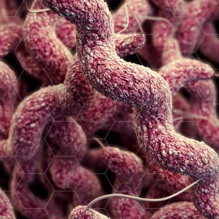

The Problem
When bacteria do not respond to the drugs designed to kill them this threatens to return us to the time when simple infections often turned fatal. The longer drugs are being used, the more bacteria are becoming infectious because they can adapt to the antibiotics that are designed to kill them. This leads to less effective drugs and more dangerous bacteria. In addition, antibiotics are incorrectly presribed, 50% of the time in situations where they are not needed or there is an incorrect dosage or duration. Each year in the United States, 2 million people become infected with bacteria which are resistant to antibiotics and 23,000 people die each year from these infections.

The Center for Disease Control is dedicating
$264 million
to antibiotic resistant solutions!
1 in 8 People Die from Drug-Resistant Strep Throat Infections
According to the CDC, there are up to 2.6 million strep throat infections per year in the United States. Of these cases, only 1,300 are drug-resistant infections which equates to 1 in 2,000 cases. Out of these 1,300 cases, there are 160 deaths. Therefore, in every 8 drug-resistant strep throat infections, 1 person is likely to die.
What is Antibiotic Resistance?
Antibiotic resistance is the ability of microbes such as bacteria, viruses, fungi and parasites to resist the effect of antibiotics.
Bacteria evolve resistance and immunity to antibiotics through natural selection. Resistant bacteria evolve, reproduce and spread throughout your body which can potentially lead to more serious issues.
Some microbes are harmless and even beneficial to health, but some can be harmful and cause disease to humans, animals or plants. Each and every microbe has the potential to become drug-resistant organisms.

What Our Visualization Accomplishes
Allows users to run various simulations to see how stopping treatment early can impact the total number of resistant bacteria in one's system.
Antibiotic
Bacteria
Tsdlkf
sdfsd